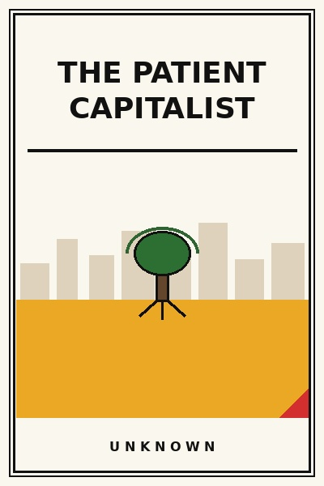

The Patient Capitalist
Surviving three speculative booms without selling your soul.
READ FULL BREAKDOWN (FREE) →The Big Idea
Surviving three market booms without liquidating requires emotional immunity to crowd euphoria and FOMO.
Key Lessons
The Madness of Crowds
Every generation experiences a mania where ordinary citizens believe historical valuation laws have been repealed.
The Iron Law of Gravity
Eventually, all asset valuations collapse back to the hard reality of discounted future cash flows.
Surviving the Winter
The investor who never gets forced to sell during a liquidity panic inevitably buys prime assets at fire-sale prices.
The Tortoise Advantage
A steady fifteen percent annual return compounded over thirty years beats erratic sixty percent gains followed by wipeouts.
The Curse of Leverage
Leverage is the only thing that can turn a mathematical genius with a sound thesis into a bankrupt pauper.
Generational Compounding
Teaching your children thrift, patience, and financial sanity is worth more than leaving them a giant lump sum.
The Quiet Exit
True wealth is the quiet freedom to spend your Tuesday morning walking in the woods without answering to anyone.
The Graveyard Proves It
Where this advice breaks: Where this advice breaks: extreme patient conservatism can cause investors to miss once-in-a-generation technological platform shifts.
Read the autopsy: byjus-empire →